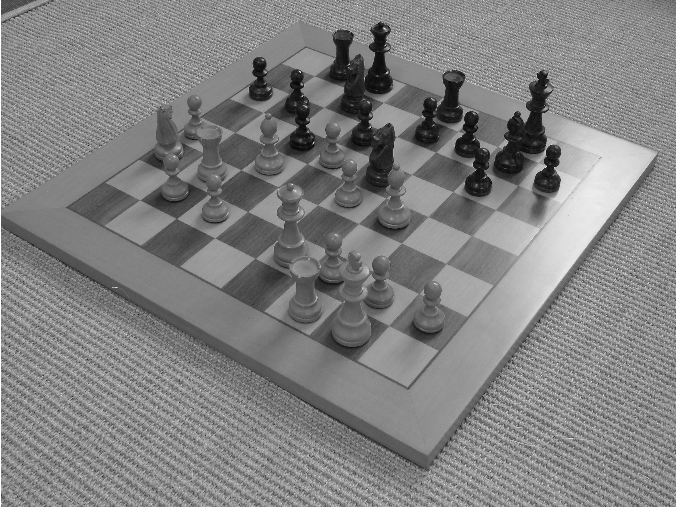
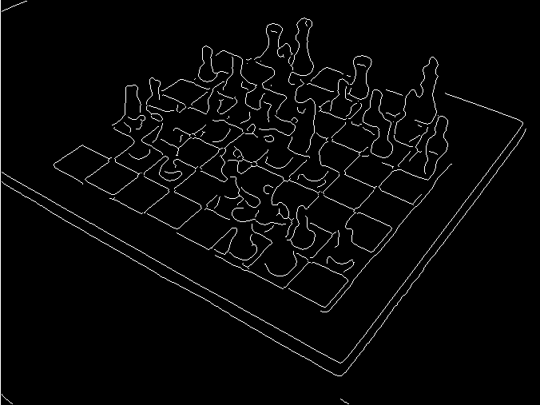
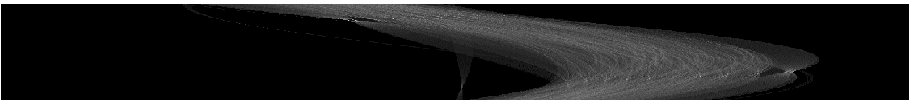
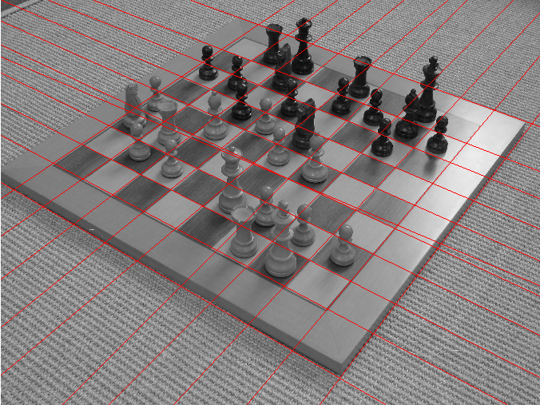

Demonstration of Hough Transform for straight lines
David Young
Contents
Read in the chessboard image
This assumes that the Sussex vision library is in your Matlab path.
The image is read, converted to gray-level and then displayed in a new figure.
im = teachimage('chess1.bmp');
f1 = figure; imshow(im);
 Find edges
We use the Canny edge detector, from the Matlab Image Processing Toolbox. The thresholds (0.1 and 0.2) and the smoothing constant (2) have been tweaked by trial and error to work well for this image. Note that the smoothing has to remove the high spatial frequency texture in the background.
After finding the edges, we display the binary edge map in a new figure.
canny_thresh = [0.1 0.2];
canny_sigma = 2;
e = edge(im, 'canny', canny_thresh, canny_sigma);
figure; imshow(e);
 Perform the Hough transform
We call the Matlab toolbox hough function to perform the tranform. Use the Matlab command helpwin hough to get more details, and see the lecture slides for more information on the principles behind the process.
In the display of the accumulator array, the theta axis runs vertically, and the rho axis runs horizontally. The two roughly horizontal rows of bright dots correspond to the two sets of lines at different angles on the chessboard.
The default settings for the bin sizes mean that for this input image, there are more bins in the rho direction than in the theta direction. This can easily be changed, but the defaults work well in this case.
[h, theta, rho] = hough(e); figure; imshow(sqrt(h'), []);
Warning: Image is too big to fit on screen; displaying at 67%
Find the peaks in the transform
We use the toolbox function to locate the peak positions. Again, the parameters have been tweaked to suit this specific image. The maximum number of peaks to find is 21, and peaks must not be closer together than 27 bins in rho and 11 bins in theta.
maxPeaks = 21; peakSep = [27 11]; p = houghpeaks(h, maxPeaks, 'Threshold', 0, 'NhoodSize', peakSep);
Plot the lines on the image
We first convert the angles used from degrees to radians (because normal Matlab functions use radians - hough is peculiar in returning degrees). We switch back to the figure containing the original image for drawing.
We then use a loop to plot each line. (It would be possible, but fiddly, to vectorise this code.) line_box is another local function that just returns the coordinates of the points where the line intersects the boundaries of the image, to simplify plotting.
The results are good but not perfect - but that's to be expected, given that there are many objects and textures in the image.
theta = (pi/180)*theta; % convert from degrees to radians figure(f1); % original image window [nr, nc] = size(im); hold on % plot on top of image for pr = p' % pr is assigned each row of p in turn r = rho(pr(1)); % look up rho for the current line t = theta(pr(2)); % look up theta for the current line l = line_box(1, nc, 1, nr, r, t); % get end points if ~isempty(l) plot(l([1 3]), l([2,4]), 'r-', 'LineWidth', 1); end end hold off
Experimenting yourself
You can experiment with this demonstration yourself, by downloading this html document and using Matlab's grabcode function to extract the original M-file. You can then edit it to change the parameters or to try, perhaps, the toolbox houghlines function.
This document may be accessible from outside Sussex University, but to use functions from the local library you need to be a student or member of staff of the University.
Copyright University of Sussex, 2006